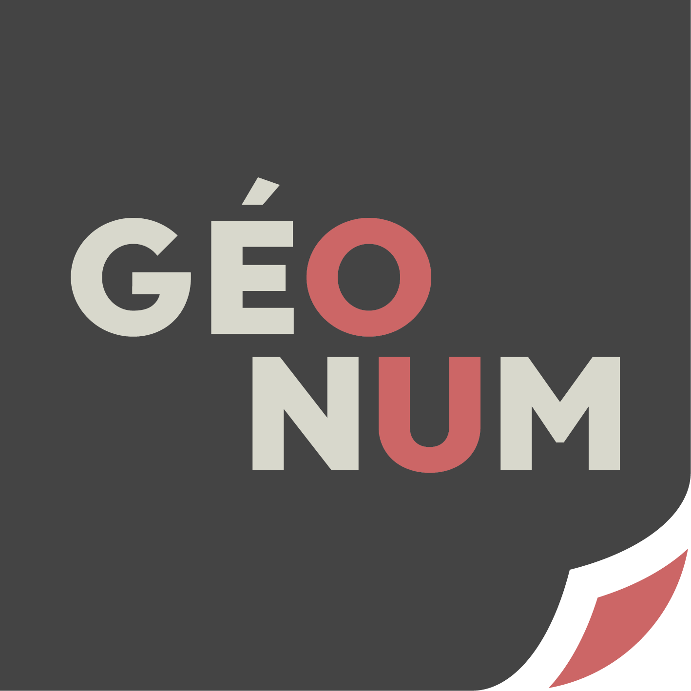
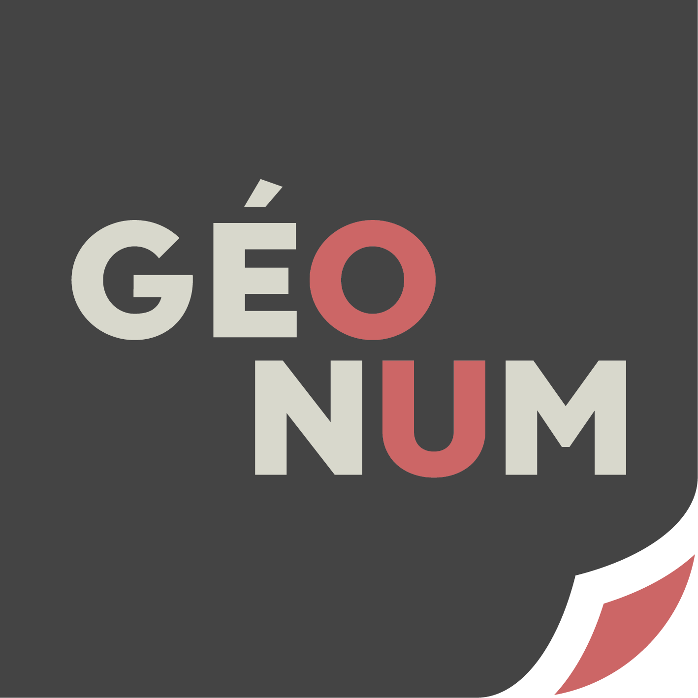

About us
Coming from an initial degree in earth science, I have always had a keen interest in science, programming and cartography. During an internship I was asked to carry out a structural study of the Oxia Planum region, which allowed me to discover the field of remote sensing. I then went on to study for a master's degree specialising in geographic information systems (GIS) with the aim of continuing in this field.

Llyodore Mimoun

Coming from a geography degree, and always passionate about photography, I had the chance to realize my passion during one year: photographing tornadoes and other exceptional climatic events in Canada and USA. I was then able to study for a master's degree in environment. I started my studies in a master specialized in geographic information systems in order to acquire a great mastery of these systems and to be able to work later on themes dealing with all my passions!
Matthieu Lacroix
As students in the last year of a master's degree in digital geographies called Geonum (accredited by the Ecole Normale Supérieure de Lyon, Université Lyon 2 and the Université Jean Monnet), we are both passionate about remote sensing and mountaineering. This site aims to share a method that we set up during a project to approach a method allowing the monitoring of the evolution of a glacier using remote sensing tools.
 
